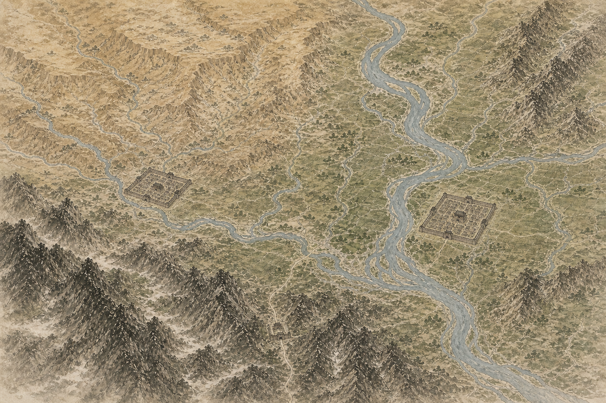

长安large city footprint，底图里是静态城郭，上层只叠状态。
洛阳large city footprint，用动态边圈表达归属和选中。
函谷/潼关样式雄关 footprint 只做样式占位，尚未绑定正式 city id。
验证重点隐藏旧图标后，城是否仍自然可点、可读、可对齐。
真实游戏坐标参考：长安 q31/r22, 洛阳 q40/r20, 河东 q34/r18, 安定 q23/r20。此页把这些语义映射到生成样张中的对应 footprint，用于设计验证；不是最终坐标校准工具。